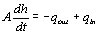
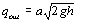
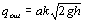
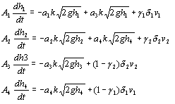

|
You are here : Control System Design - Index | Simulations | Four Coupled Tanks | Dynamics Four Coupled Tanks Case StudyDynamicsThis apparatus consists of four interconnected water tanks, two pumps and associated valves. The apparatus inputs are the supplies to the pumps, v1 and v2, (voltages) and the outputs are the water levels in the bottom two tanks, y1 and y2 (voltages). The flow to each tank is adjusted using the associated valves.
The first step was to derive a mathematical model of the Four tank
laboratory apparatus. Mass balance for one of the tanks gives:  Where A denotes the cross section of the tank, h>=0 the water level and qin>=0 and qout>=0 the inflow and outflow of the tank, respectively. In order to establish a relationship between output and height Bernoulli’s Law is used and states that  where a is the cross section of the outlet hole and g is the acceleration due to gravity. This relationship is roughly the expected output due to height relationship although it does not take into account any flow dynamics of the orifice. A common multiplying factor for an orifice of the type being used in this apparatus is Coefficient of discharge k = 0.90 (in this case) We can therefor re-write Bernoulli’s Equation  The flow through each pump is split so that a proportion of the total flow travels to each corresponding tank. This can be adjusted via one of the two valves shown in Figure 1. Assuming that the flow generated is proportional to the voltage applied to each pump, (change)v, and that qT and qB are the flows going to the top and bottom tanks, respectfully and by letting the parameter ? be determined by how the valves are set. We are able to come up with the following relationship. Combining all the equations for the interconnected Four Tank
Laboratory Apparatus we are able to  All numbers associated with the coefficients relate to the pump or tank that the particular coefficient is associated with. |